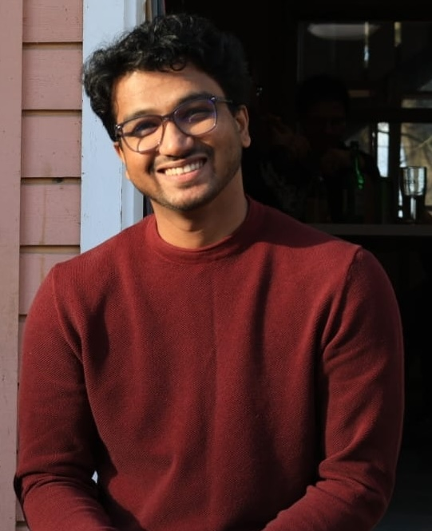

BioViL was born not in a boardroom, but in the forests and farms of Assam, from a question that wouldn't go away: "Why plant trees when we already have plenty around us?"
The forests around many Indian villages are shrinking, not because people don't care, but because they have no alternative. Firewood is free. It's available. And it's what three generations have always used.
BioViL's founder, working in Assam's rural heartlands, asked a different question: what if the waste already on every farm, the cow dung, the crop residue, could replace that firewood entirely? The answer was biogas. The mission became BioViL.
❝ BioViL emerged from a practical insight: turning waste into a resource could address energy poverty and deforestation, at the same time. ❞
Three pillars. One goal: lasting energy independence for rural communities.
We go to the village. We hold trainings and workshops, run youth programs, not to tell communities what they need, but to learn alongside them. Biogas only works when people believe in it and own it.
We build simple, user-friendly monitoring tools that give farmers real-time feedback on their biodigester, because data shouldn't be just for engineers. Our tech evolves based on what farmers actually tell us they need.
We tested. We failed. We learned. Our first monitoring prototype failed because farmers needed automation, not manual charts, so we redesigned it. BioViL is built on honest iteration, not perfect plans.
BioViL isn't just an energy provider. It's a cooperative business model where farmers are co-owners, not customers.

Pankaj is a clean energy specialist bridging technical energy modeling with grassroots impact. Holding a Master's in Renewable Energy and E-Mobility from Hochschule Stralsund and an Electrical Engineering degree from NERIST, India, his technical expertise spans hydrogen ecosystems, microgrid analysis, and bio-energy systems.
Currently serving as a Manager at envyze GmbH in Germany and a Fellow with the global Mercedes-Benz beVisioneers program, Pankaj is spearheading the BioViL project in Assam. His work focuses on converting agricultural waste into sustainable power, empowering local communities to lead their own energy transitions.
"I didn't start BioViL because it was a good idea. I started it because it was the only idea that made sense."
We started with one farmer in Assam, one prototype, and one conviction: that every village deserves to own its energy future.